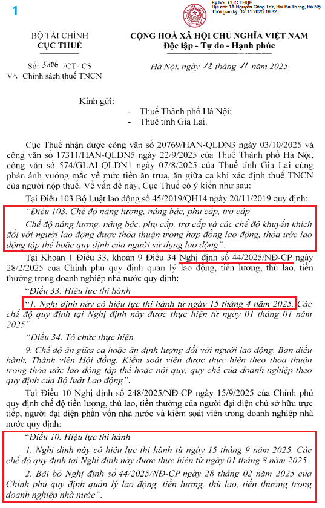
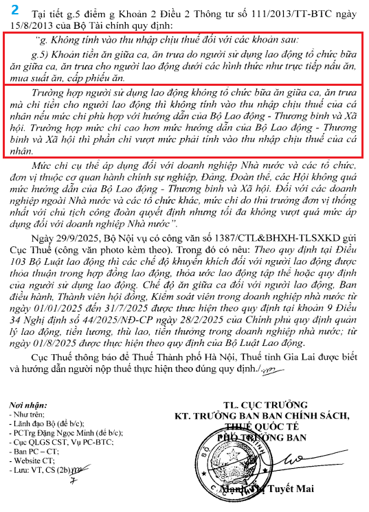
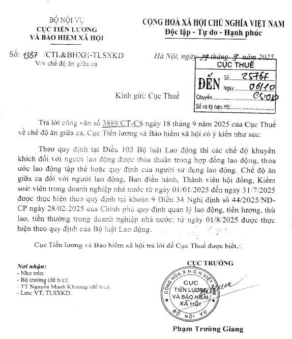
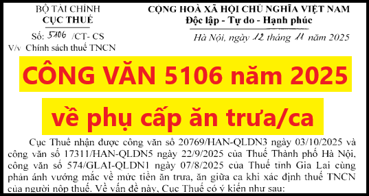

Ngày 12/11/2025, Cục Thuế ban hành Công văn 5106/CT-CS V/v chính sách thuế TNCN - về mức tiền ăn trưa, tiền ăn giữa ca khi xác định thuế TNCN thế nào?
Cụ thể như dưới đây các bạn tham khảo:|
   |
